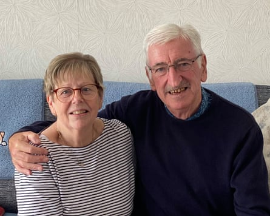

“H e took everything, left us with absolutely nothing,” says David Middleton, one of thousands of British and Irish investors who racked up huge losses from the collapse of a German property ponzi scheme.
The 72-year-old pensioner from Northern Ireland is referring to Charles Smethurst, the German-British businessman who set up Dolphin Capital in 2008, later renamed Dolphin Trust, then German Property Group (GPG), with 200 affiliated companies. In July 2020, the business filed for insolvency, owing more than €1bn to up to 25,000 investors around the world.
Smethurst was convicted this month of “serious fraud” and sentenced to six years and 11 months in prison by a regional court in Hildesheim, in northern Germany. As part of a plea bargain, he admitted to four of 27 counts of commercial fraud, filed against him by the Hanover public prosecutor’s office last October, for total damages of €56m. The other charges were dropped in return for his confession to speed up the trial, which was due to run into August.
Dolphin’s glossy brochures promised readers double-digit returns for investing their money in a scheme that pledged to restore historic buildings across Germany – including the ruins of castle Dwasieden on the Baltic Sea island of Rügen – and turn them into luxury apartments. However, few were ever restored.
Investors were mainly from the UK, Ireland, France, Singapore and South Korea and included financial institutions and individuals, many of whom lost their pension pots or other savings after regular interest payments dried up in 2019.
Smethurst’s fraud conviction related to €60m in investments made by the French fund manager Horizon AM, including €30m in the Pariser Strasse project in Berlin. The court heard that the building was never bought, but the funds were used by Smethurst’s company to meet other obligations. He served a prison sentence for fraud between 2000 and 2003 in an unrelated case.
Horizon said it was “led to believe we were partnering with an experienced and reputable real estate developer” as Dolphin provided the firm with “highly detailed due diligence documents” and sent regular reports wrongly suggesting projects were “progressing as planned”. The investor was not aware of Smethurst’s previous fraud conviction.
“According to findings from the insolvency administrator and the criminal investigation, a significant portion of the funds was diverted abroad to jurisdictions with strict banking secrecy, notably the British Virgin Islands and possibly the Cayman Islands,” Horizon said.
“These jurisdictions do not cooperate with European authorities, which means that the money trail goes cold. This illustrates the systemic failure of cross-border cooperation in cases of fraud, and why victims like us are left without meaningful recourse.
“We are still wondering where the money went, what remains, and whether it is still possible to recover anything to compensate Horizon and its investors.”
UK individual investors told the Guardian they are angry, and fear that Smethurst will be released early for good conduct and recover the hidden funds for himself.
Janet and David Middleton invested £220,000 in Dolphin
Middleton and his wife, Janet, invested in Dolphin in 2015: his pension lump sum of £100,000 and her inheritance of £120,000. Their financial adviser, the late Alastair Hooks, told them it was low-risk and supported by the German government, Janet Middleton recalls. “To be honest, I was nervous about it and strongly stated that as pensioners we could not afford to lose this amount of money, but again we were assured there was no risk.”
After Dolphin filed for insolvency, Hooks did not return their calls, and the couple discovered he had unregistered from the Financial Conduct Authority (FCA) in 2012. She says they have explored every avenue – even as they dealt with David being diagnosed with bowel cancer – but have not recovered any of their investment.
Janet says Smethurst’s sentence “seems very lenient to me … Smethurst may well serve his sentence and even get early release for good behaviour while other people like David and I now serve a sentence in our retirement economically”.
A former NHS nurse, she says the couple had been looking forward to a comfortable retirement but have had to budget their outgoings; they have not had a holiday in years and both drive 20-year-old cars.
The Hildesheim court said it did not order Smethurst to make any payments to investors because it could not establish that he had personally siphoned off any funds.
Justus von Buchwaldt, of the law firm BBL, the insolvency administrator who testified in June, subsequently said: “I fear that this is only the tip of the iceberg. It is still unclear if other people were involved in this large-scale fraud and where most of the investments ended up.” Of an estimated €1.3bn of investments received by the property company, about €800m is missing.
The Hanover prosecutor’s office said it had investigated other company officials but could not find evidence of any wrongdoing.
It is one of Germany’s biggest investment scandals since the second world war, and the German authorities have been criticised for being slow to intervene, even though the property company stopped filing financial accounts in 2015.
Alison Moncrieff-Kelly, 63, a freelance musician from Kent and former director of the Rye arts festival, was a Dolphin investor. She said: “This seems a pathetically small price for Smethurst to pay for such heinous and convoluted levels of crime. Where’s the money gone is the big question … and six years 11 months doesn’t touch the sides.”
Most of the listed buildings acquired by GPG were never redeveloped and left derelict. Von Buchwaldt at BBL has sold 20 of 75 properties so far, for more than €87m, and has yet to distribute the proceeds to investors. Those sold include castle Dwasieden, a listed former brewery in Bad Aibling in Bavaria and a period villa in Fürstenberg/Havel in Brandenburg. The property sales are expected to take years as the legal situation is often complex. Almost 8,000 creditors have filed claims with BBL against the collapsed property group, out of an estimated 15,000 to 25,000 investors globally.
Von Buchwaldt has said BBL would work with the UK’s FCA, Serious Fraud Office (SFO) and Financial Services Compensation Scheme (FSCS).
Debbie Kay Randles, 67, invested £25,000 in Dolphin in 2015 and, like others, has also lost money in other investment schemes. She paid £6,000 to a financial claims company in an attempt to recover her Dolphin investment, but “they just disappeared”. She even enlisted a private detective to track down the claims firm.
“It’s just been an absolute ongoing nightmare,” she says. “I’ve not got a lot left, so I’ll just keep working, probably until I’m 75, and then retire.” A former TSB employee, she now works for a window blinds business and lives in York.
Moncrieff-Kelly says the trial “doesn’t address this issue of how incredibly badly regulated financial affairs are in the UK … I don’t know if it’s happening so much in any other country in the world.”
She points to the “middlemen” – financial advisers who are typically paid commission of 20% to 30% and “kept that money” despite “selling a fraud”. She invested in Dolphin after her financial adviser suggested it.
Moncrieff-Kelly has recovered about half her £80,000 investment – money she inherited from her late mother – from the FSCS, with the help of a claims company that took the other half as payment.
The FSCS says it has paid compensation to more than 1,900 customers in relation to Dolphin/GPG investment products, and a further 150 people have open claims. Compensation may have been triggered in relation to unsuitable financial advice that customers were given. It says it cannot put a figure on the compensation paid because it includes payouts for other investment losses.
The SFO declined to comment while the FCA said it could not comment on individual firms.
“People don’t understand the trauma and the damage that [fraud] has done,” says David Middleton. “People think [with] white collar crime, slick City crime, there’s no victim. There is a victim.”